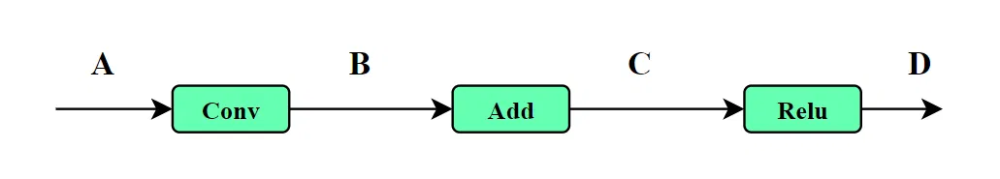
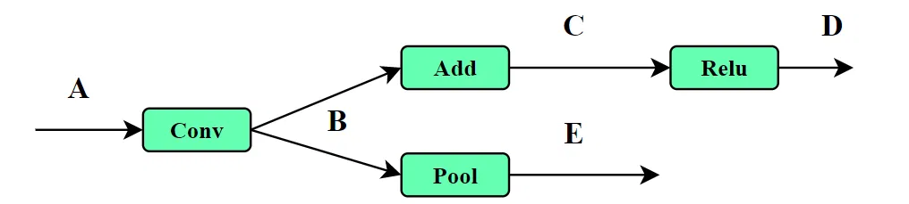
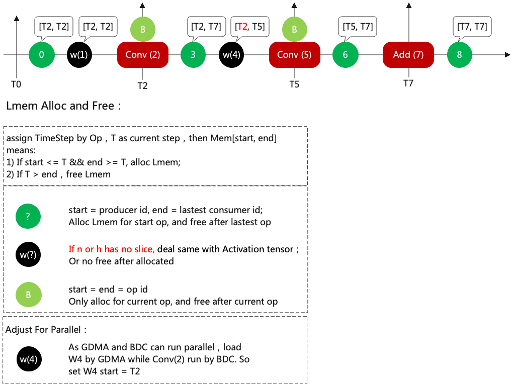
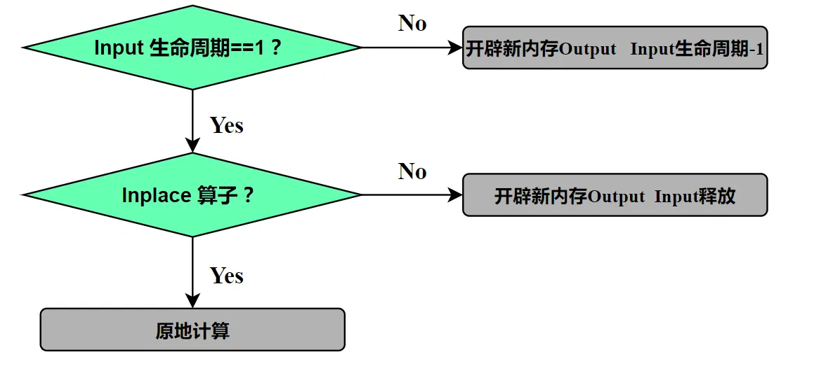
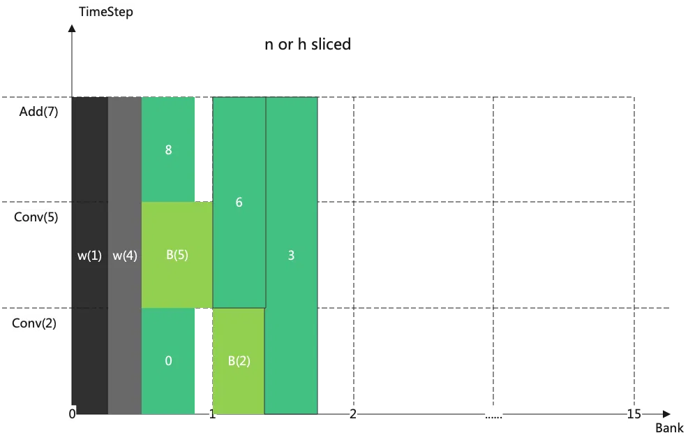
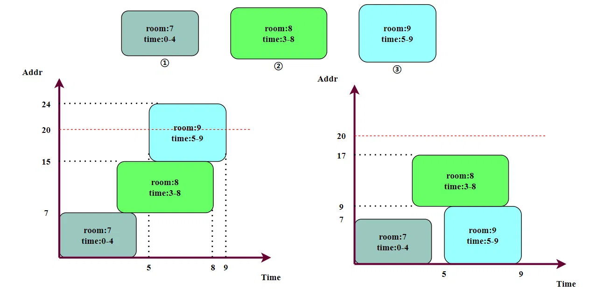

# 前言
本文讲解神经网络推理过程中的内存分配相关内容。
作为初学者，错误在所难免，还望不吝赐教。
# Tensor 类型
不同的 tensor 有着不同的生命周期，神经网络推理过程中主要有三种 Tensor 类型：
1. 输入输出 tensor
输出 tensor 是下一节点的输入 tensor，它们一体两面，这种类型的 tensor 生命周期起于 “生产节点”，终于最后一个 “消费节点”。
2. 权重 tensor
权重 tensor 和算子绑定在一起，生命周期随着算子开始，也随算子结束。但也可能存在共享权重的情况，例如 tiling 操作产生的并行算子共享 Weight，算能 TPU 选择将 weight 常驻内存。
3. 中间 tensor
中间 tensor 指的是算子计算时不得不开辟的临时空间，比如用来存储中间结果等，其大小和算子的具体实现有关。中间 tensor 的生命周期和权重 tensor 类似，随着算子开始，也随算子结束，但没有权重 tensor 的共享问题。
# 原地操作（Inplace Operation）
原地覆盖不再需要的数据，不再开辟新的输出 tensor 空间。例如 Element-wise 算子、Relu 算子等可以在原地进行操作。

如图所示，B、C、D 三个 tensor 可以共用同一个内存空间。

如图，当 B 的生命周期未结束时，C 不能共用 B 的内存空间。
# 内存共享（Memory Sharing）
分析张量的生命周期，生命周期结束的张量及时释放，其所占据的空间可以被重复利用。拿算能 TPU 网站的图来举一个例子。如下图所示，这是一段简单的网络，有三个算子，分别是 Conv、Conv、和 Add。两个黑色的圆圈是权重，其余绿色的圆圈是输入输出 tensor 和中间 tensor。
图源：算能 TPU 网络举例

上图展示了所有 tensor 的生命周期，三个算子的周期分别标记为 T2，T5 和 T7。
- 0 号 tensor 是首个 Conv 节点的输入 tensor，W1 是权重，所以 T2 开始 T2 结束，及时释放；
- 3 号 tensor 有两个消费节点，所以需要到 T7 才释放；
释放后的空间可以重复利用。
# 简单的分析规则

这里给出一个基本的 Tensor 生命周期分析流程，如图所示。可以通过这个流程来确定输入输出的生命周期。
先初始化 tensor 的生命周期，它等于 tensor 的出度，也就是后面连着几个 “消费者节点”。
再按照执行顺序遍历网络结构，①如果当前节点的输入 Input 的生命周期大于 1，意味着它不能被释放，也不能被覆盖，需要为 Ouput 开辟新空间，同时 Input 生命周期减一；②如果当前节点的输入 Input 的生命周期等于 1，则进一步判断是否是 Inplace 节点；③如果不是 Inplace 节点，则仍需要为 Output 开辟空间，计算完成后 Input 可以释放；④是 Inplace 节点，则可以原地计算。
# 内存拼图游戏
在完成网络的 Tensor 生命周期分析之后，就要尝试进行实际的内存分配，以确定设备内存是否足够放得下。建立一个坐标系，以横轴为时间 (Time)，纵轴为空间 (Addr)，把所有 tensor 作为一个图块拼进去，图块与图块之间不能有交叠，就像一个拼图游戏。
下图是算能 TPU 给出的内存分配例子，可供参考。不过这个图是以横轴为空间 (Addr)，纵轴为时间 (Time)。

图源：算能 TPU 内存分配
这个拼图游戏并没有看起来那么容易，当网络结构复杂的时候，tensor 大小多样，拼图的方式也多样。不同的拼图方式可能直接决定内存分配的成功与失败。这里举个简单的例子，如图所示：

假设有三个内存块需要分配，他们所占空间和生命周期都已经确定。设备内存只有 20 大小。假如按照左图的拼图方式，会发现图块③没有空间存放，超出内存限制。而采用右图的拼图方式，内存分配就顺利实现。
# 后记
本博客目前以及可预期的将来都不会支持评论功能。各位大侠如若有指教和问题，可以在我的 github 项目 或随便一个项目下提出 issue，或者知乎 私信，并指明哪一篇博客，我看到一定及时回复，感激不尽！